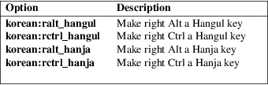

xkeyboard-config − XKB data description files
xkeyboard-config provides the description files for the X Keyboard Extension (XKB) and for libxkbcommon. Typically it is the task of the desktop environment to apply the requested configuration. Users running an X server can also use the setxkbmap(1) tool to apply keyboard configuration at runtime or configure XKB settings in the xorg.conf(5).
xkeyboard-config provides the XKB data files installed in /usr/share/X11/xkb. User-specific data files may be elsewhere but it depends on the tool whether those files are loaded. For example, the libxkbcommon library will by default load XKB data files from the user’s home directory. See the libxkbcommon documentation for details.
The "custom" layout is a layout that is listed as available to tools reading the data files but is not actually provided by xkeyboard-config. A user may save a layout specification in the /usr/share/X11/xkb/symbols/custom file and that layout will be available to most tools interacting with the xkeyboard-config data files. This is primarily aimed at systems running X where additional lookup paths cannot easily be added.
Because the "custom" layout is merely listed as available but not provided by xkeyboard-config, the layout will not be overwritten on updates.
Switching to another layout
Key to choose the 2nd level
Key to choose the 3rd level
Ctrl position
Use keyboard LED to show alternative layout
Use keyboard LED to indicate modifiers
Layout of numeric keypad
Numeric keypad Delete behavior
Caps Lock behavior
Alt and Win behavior
Position of Compose key
Compatibility options
Currency signs
Key to choose 5th level
Non-breaking space input
Japanese keyboard options
Korean Hangul/Hanja keys

Esperanto letters with superscripts
Old Solaris keycodes compatibility

Key sequence to kill the X server
/usr/share/X11/xkb/compat
/usr/share/X11/xkb/compiled
/usr/share/X11/xkb/geometry
/usr/share/X11/xkb/keycodes
/usr/share/X11/xkb/keymap
/usr/share/X11/xkb/rules
/usr/share/X11/xkb/semantics
/usr/share/X11/xkb/symbols
/usr/share/X11/xkb/types
setxkbmap(1)